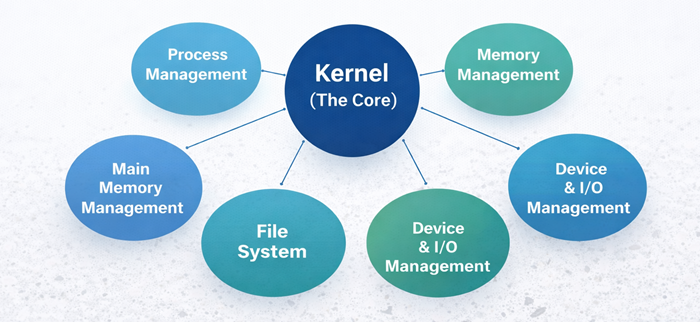
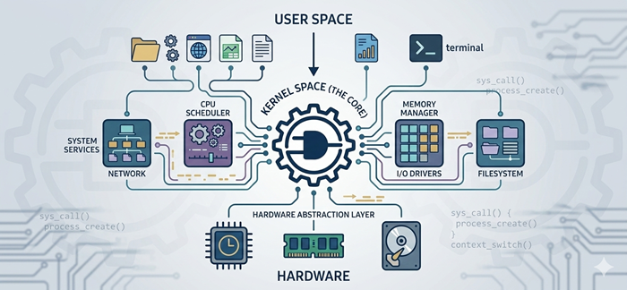
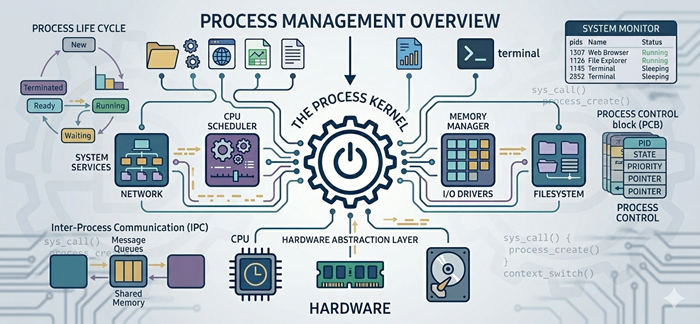
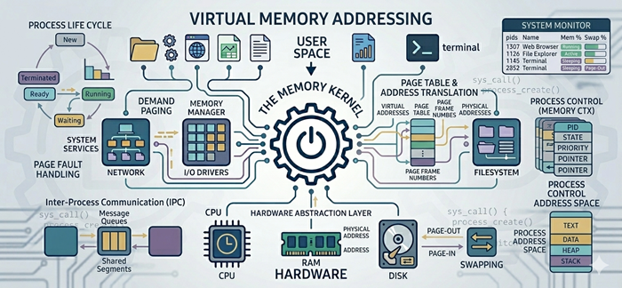
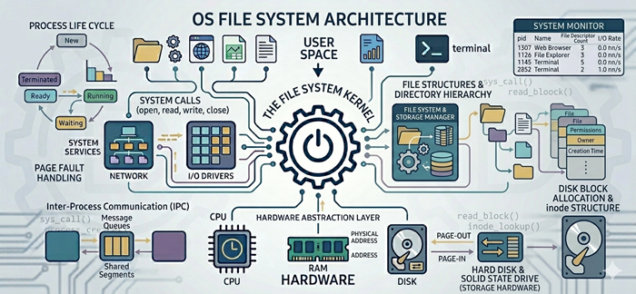
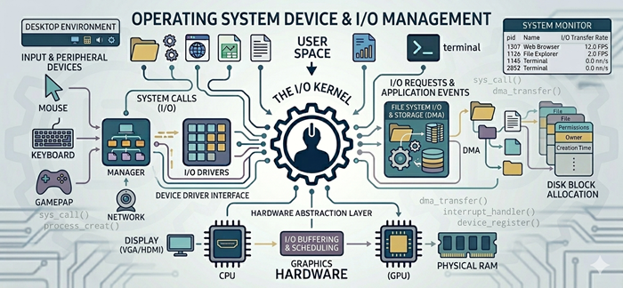
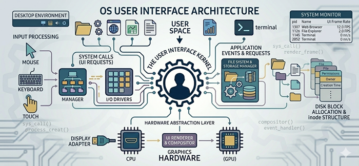
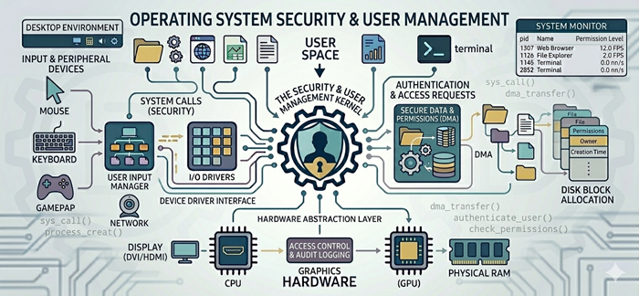

OS Types (Intro)
Operating system components are the major parts that work together to run programs, manage hardware, and keep everything organized and secure.

On this page, each section explains one key component you'll find in most modern operating systems.
Kernel (The Core)
The kernel is the core of the operating system. It runs all the time and controls the most important tasks.

What it does:
- Communicates with hardware (CPU, RAM, storage)
- Decides which program gets CPU time
- Manages memory usage
- Handles system calls (requests from programs)
Why it matters: If the kernel fails, the whole system can crash.
Process Management
A process is a program that is currently running (like a browser, game, or music app).

What process management does:
- Starts and stops processes
- Schedules CPU time (multitasking)
- Allows processes to communicate when needed
- Prevents one process from blocking everything else
Example: You can listen to music while browsing the web because the OS schedules both tasks.
Memory Management
Memory management controls how RAM is used so programs can run smoothly.

What it does:
- Gives memory to programs when they start
- Takes memory back when they close
- Uses virtual memory to extend RAM using storage
- Protects memory so apps don't overwrite each other
Example: If too many apps are open, the OS may slow down because RAM is full.
File System
The file system organizes and stores data on disks (SSD/HDD).

What it does:
- Creates, deletes, and organizes files/folders
- Keeps track of where files are stored
- Controls permissions (who can access files)
- Helps prevent data corruption
Examples of file systems: NTFS (Windows), APFS (macOS), and ext4 (Linux)
Device & I/O Management
Computers use many devices: keyboard, mouse, display, USB, printer, Wi-Fi card, etc.

What this component does:
- Controls input/output (I/O) devices
- Uses device drivers to talk to hardware
- Manages data transfer between devices and memory
- Buffers data to avoid delays
Example: A printer driver helps the OS translate your document into something the printer understands.
User Interface
The OS provides a way for users to interact with the computer.

Types of interfaces:
- GUI (Graphical User Interface): windows, icons, menus (Windows/macOS)
- CLI (Command Line Interface): text commands (Terminal / Command Prompt)
Why it matters: It makes the system usable and controls what users can do.
Security & User Management
Operating systems protect the system and manage multiple users.

Security features include:
- User accounts and passwords
- Permissions and access control
- Encryption (protecting stored data)
- Updates and patches to fix vulnerabilities
Example: A standard user account can't install system-wide software without admin permission.
Sources: The information on this page was adapted for educational purposes from TutorialsPoint - Operating System, IBM Documentation - Operating System Components, and University of Illinois OS Course Notes.